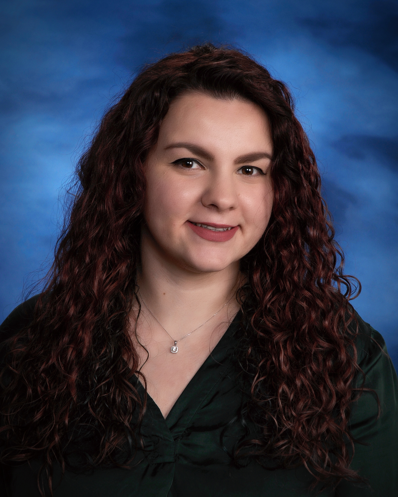

Kleopatra Gjini

Introduction
I am a passionate and motivated recent computer science graduate who has
gained experience of multiple programming languages through different
projects. I am an excellent problem solver who can diagnose and
troubleshoot hardware, software, and other technical problems efficiently.
I am currently providing technical support to an engineering firm but
looking to gain more experience in programming by acquiring a developer
position.
Technical Skills
-
Languages: HTML, CSS, Python, Coq/Gallina, Java, C/C++, Scheme,
SQL (Sequel), Assembly
-
Skills: Mathematics, Physics, Microsoft Office Suite,
Adobe Suite (Acrobat, Photoshop), Active Directory
-
Development Tools/Platforms: IntelliJ IDEA, Notepad++, CoqIDE,
Visual Studio, Arduino IDE, Console/Terminal, DrRacket, GitHub,
PyCharm, Figma, Windows 8/10/11, Unix, Linux
-
Text/LaTex Editors: vi, emacs, Overleaf
Internship
University of Massachusetts Boston, Boston, MA -- January 2022 - December 2022
Theory of Computation (Research Intern)
-
Conducted thorough research on Rice’s Theorem and proof assistants
by reading multiple academic papers
-
Compared and contrasted the different ways researchers formalized Rice’s theorem
-
Used a proof assistant and the programming language Coq to formalize Rice’s theorem
-
Proved that using proof assistants for complicated theorems, like Rice’s theorem,
allows for better understanding to students and provides a form of entertainment
compared to pen-and-paper proofs
Relevant Projects/Courses
University of Massachusetts Boston, Boston, MA
-
The Jminusminus (j - -) Compiler -- September 2022 – December 2022
-
Implemented functions, methods, and classes when necessary to create a
functional compiler
-
Developed parts of the parser of the j- - compiler and produced abstract
syntax trees (ASTs) in Java
-
Troubleshot and fixed bugs after every implementation of a method,
function, or class
-
Optimized performance of the compiler when necessary
-
Shell Program -- September 2022 – December 2022
-
Developed a shell program in C and implemented simple commands like exit,
env, setenv, unsetenv, cd, history, and ls
-
CCS (Carotid Calcium Scanner/Capstone Course/Group Project) -- February 2022 – May 2022
-
Worked in a team of 5 to create a browser-based semi-automatic tool for medical
imaging that helps doctors and researchers with the identification of morphologic
features of carotid atherosclerotic calcifications
-
Designed and developed the User Interface by using simple HTML and CSS
-
Helped other members of the team develop mathematical methods in Javascript to
provide functionality to our website
-
Read and understood in depth the Cornerstone.js documentation
-
Troubleshot and debugged issues posed throughout the development of this project
Additional Work Experience
HDR Engineering Inc., Boston, MA
IT Support Specialist -- February 2023 - Present
-
Diagnosing system hardware, software, and operator as well as troubleshooting efficiently
technical issues for end-users
-
Installing and configure software applications and updates
-
Managing user accounts and permissions in Active Directory
-
Providing technical support in person and to remote users via phone and email
-
Monitoring and maintaining network infrastructure like switches and routers
-
Training end-users on new software and hardware systems
-
Maintaining inventory of hardware and software assets and order new equipment as needed
-
Collaborating with other IT teams and personnel to implement new technologies and systems
University of Massachusetts Boston, Boston, MA
Computer Science/Math Tutor -- September 2021 – December 2022
-
Helped students for introduction to programming, introduction to computer science, and
math classes
-
Worked with students one-on-one and in small groups
-
Provided an active learning experience for students by explaining difficult concepts and
providing examples for explorations
-
Assisted students with understanding Python, Java, as well as College Algebra, Calculus I,
Statistics, etc.
Teacher Assistant -- September 2022 – December 2022
-
Held weekly office hours where students were getting help on homework and course concepts
-
Graded homework, projects, and exams
-
Served as a communication liaison between students and the professor
Memberships and Awards
-
Member of the Golden Key International Honour Society since 2020
-
Awarded three times with scholarships from the High Demand Scholarship Program
(2020-2021, 2021-2022, 2022-2023)
-
Member of the Tri-Alpha First-Gen Honor Society (2022)
Skills
- Greek and Albanian Speaker
Contact Info
Resources